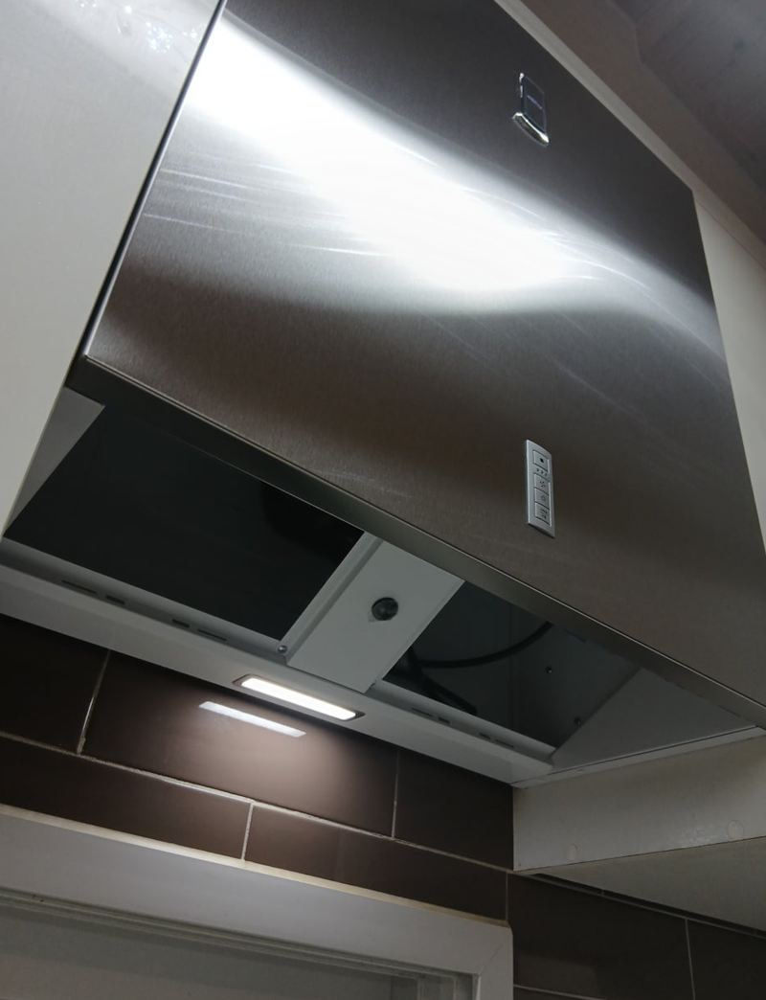
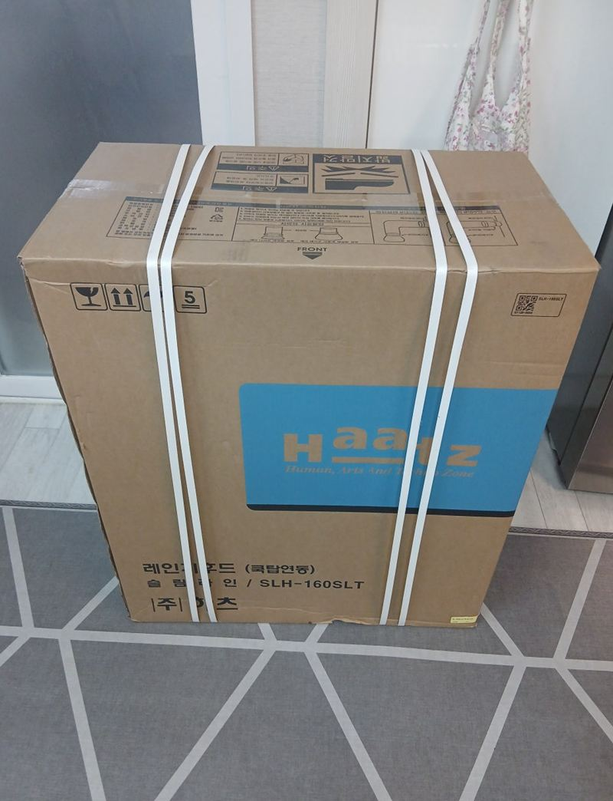
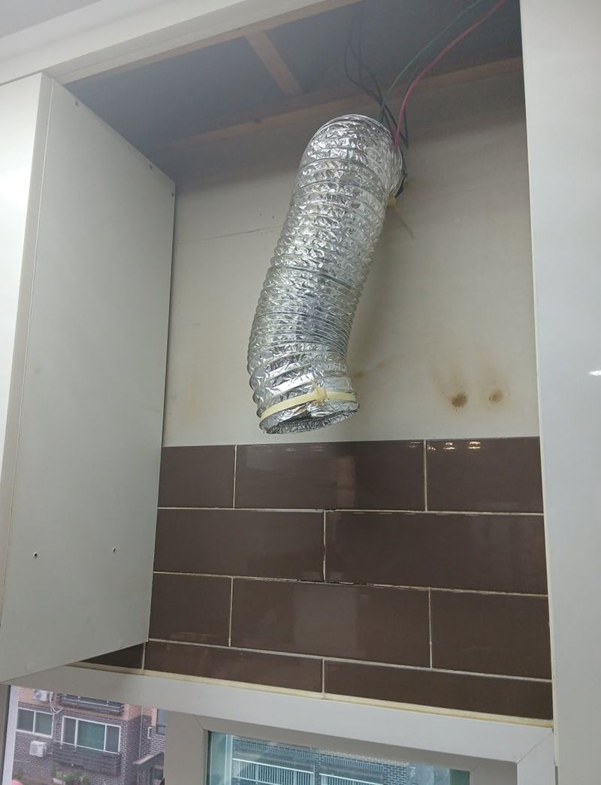
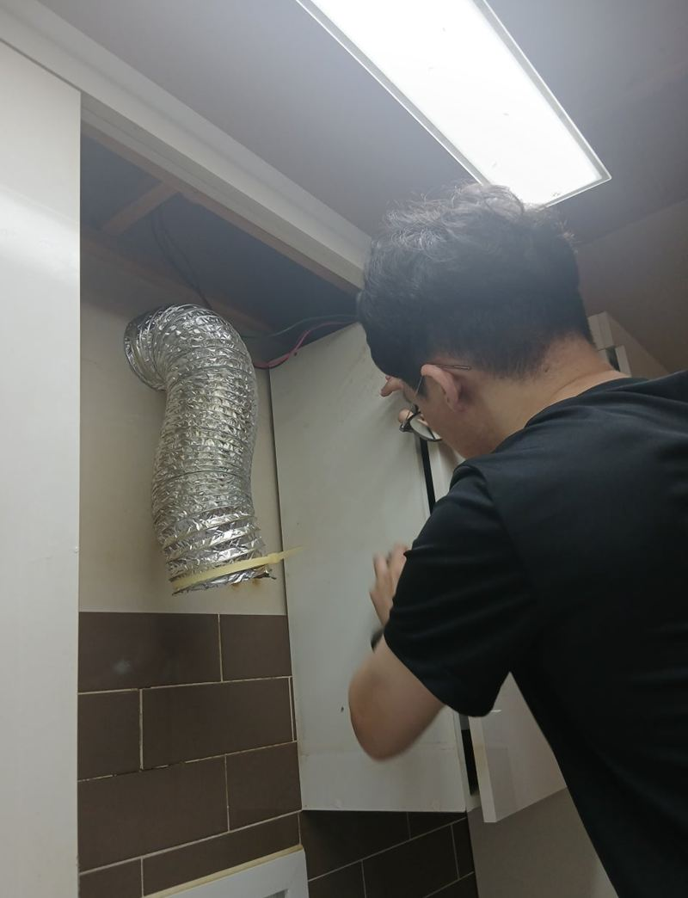
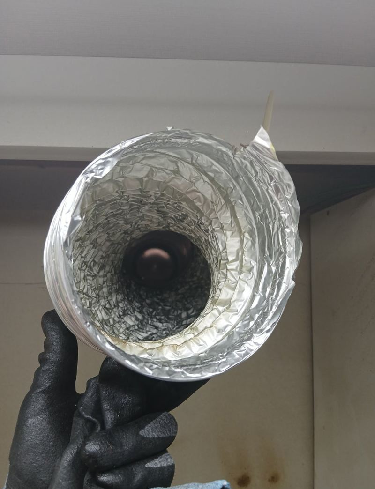
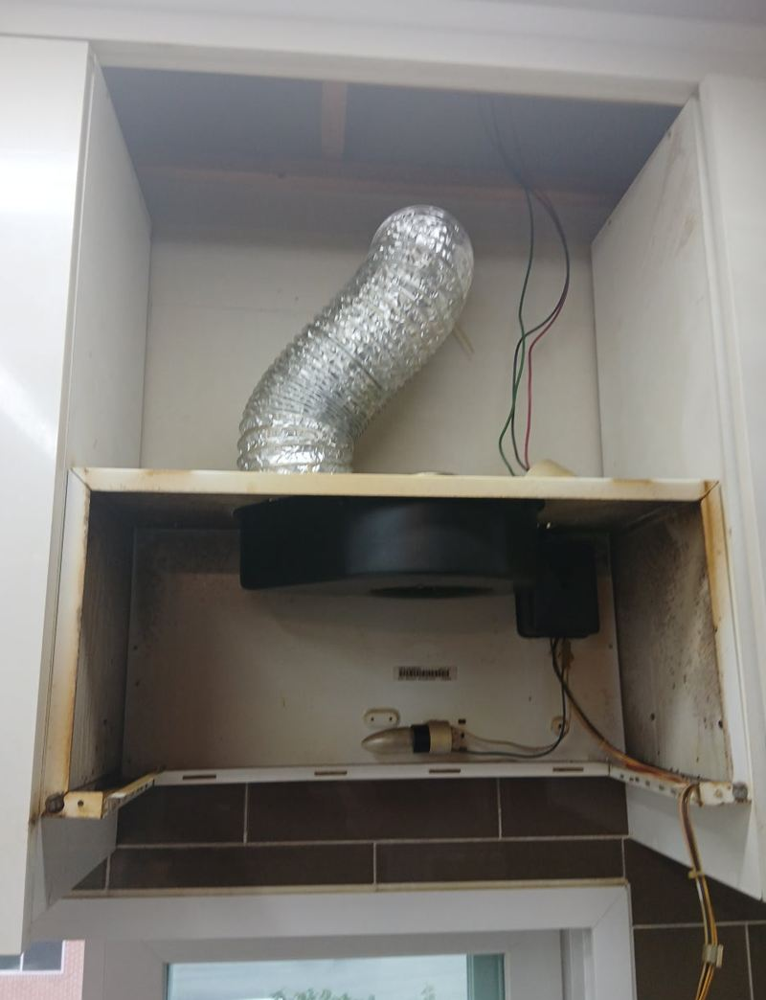
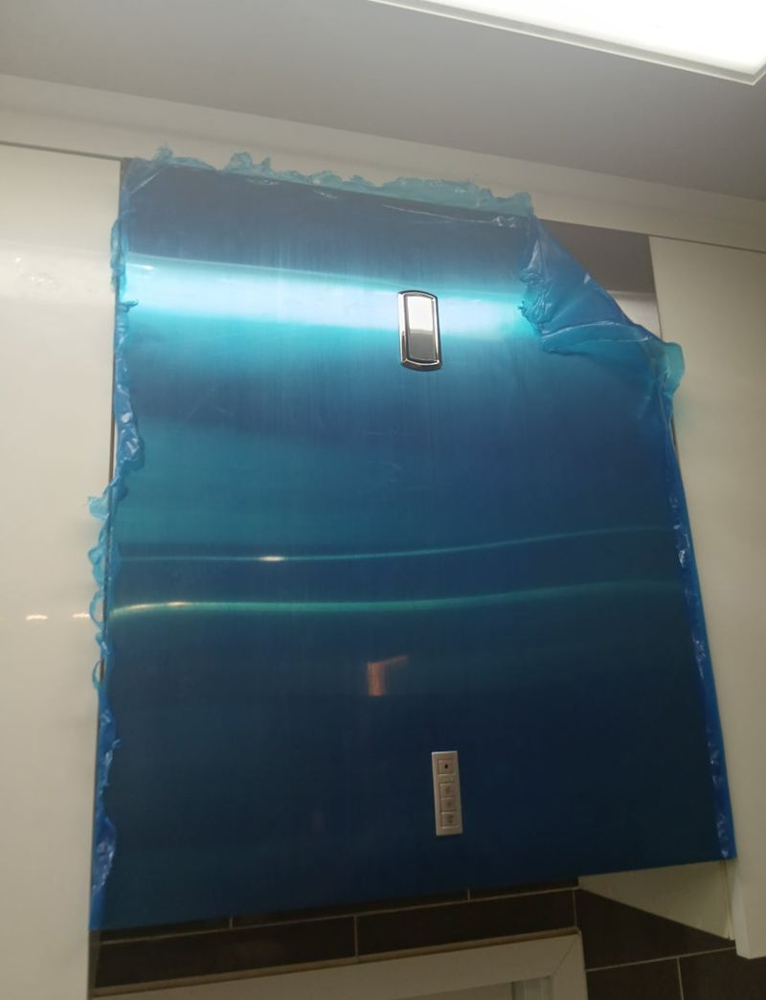

관악 후드 흡입력 약할 때 교체 방법과 비용

 교체 전교체 후
교체 전교체 후← 밀어서 전후 비교 →
"청소를 해도 흡입이 약하고 소리만 커졌어요." 12년을 쓴 슬림형 후드였어요. 켜 보니 팬이 느리게 돌고 진동이 있었고, 안쪽 필터와 모터에는 기름때가 굳어 있었어요. 이 정도면 청소로는 돌아오지 않아서, 같은 벽부형 자리에 새 슬림 후드를 달았어요.
| 현장 | 서울 관악 남부순환로 아파트 주방 |
|---|---|
| 증상 | 흡입력 약화, 소음·진동, 청소 후에도 개선 없음 |
| 한 일 | 흡입·소음 점검 → 덕트 구경·전원 위치 확인 → 철거 → 기름때 정리 → 브라켓 재조정 → 설치·작동 확인 |
| 새 제품 | 하츠 슬림형(벽부형 자리) |
청소로 되는 경우, 안 되는 경우
| 상태 | 보통은 |
|---|---|
| 필터만 기름때로 막힘 | 필터 세척·교체로 흡입 회복 |
| 팬이 느리고 소리·진동이 큼 | 모터·베어링 마모, 교체 권장 |
| 냄새가 거꾸로 들어옴 | 댐퍼·자바라 점검 필요 |
이 집은 두 번째 경우였어요. 팬이 도는 속도가 느리고 진동이 같이 느껴질 때는 모터나 베어링이 닳은 경우가 많아, 10년이 넘은 제품이라면 교체가 효율적이에요.


흔들림 없이 달려면 브라켓이 먼저
새 후드는 기존 덕트 구경과 전원선 위치에 맞춰 고정 브라켓 자리를 다시 잡았어요. 후드 본체보다 벽에 박는 앙카가 더 중요해요. 고정이 약하면 켤 때마다 떨려서 소음이 커져요.


철거하면서 드러난 덕트 주변과 벽면 기름때를 닦아 낸 뒤 새 후드를 달고, 흡입력과 소음, 조명을 차례로 확인했어요.


이런 후드라면 교체를 생각해 보세요
- 10년 넘게 썼어요모터와 스위치가 같이 낡아 하나 고쳐도 다른 곳이 고장 나기 쉬워요.
- 강으로 틀어도 약으로 튼 것 같아요팬 성능이 떨어진 신호예요.
- 윙 하는 소리와 떨림이 커졌어요베어링 마모일 가능성이 커요.
- 필터를 새로 바꿔도 그대로예요필터 문제가 아니라 본체 문제예요.
후드 교체 전에 확인해 두면 좋아요
- 상부장 아래 폭과 높이지금 후드 가로 길이와 아래 공간을 재 두면 맞는 모델을 고르기 쉬워요.
- 덕트 구경후드 뒤 배기 구멍 크기가 새 제품과 맞는지 확인해요.
- 콘센트 위치전원 코드가 닿는 거리에 콘센트가 있는지 봐 주세요.
- 상부장 바닥 상태물러졌으면 브라켓 고정 전에 보강이 필요해요.
후드 교체 질문
슬림형과 일반형 중 뭘 골라야 하나요?
상부장 아래 공간과 기존 구조에 맞춰요. 같은 형태로 바꾸면 손볼 곳이 적어요.
후드 소음은 새것으로 바꾸면 줄어드나요?
모터 소음은 대부분 줄어요. 고정이 약하면 새것도 떨릴 수 있어 브라켓을 단단히 잡아요.
자바라도 같이 바꿔야 하나요?
안쪽이 찌들었거나 찢어졌다면 같이 바꾸는 게 좋아요.
제품은 미리 사 둬야 하나요?
직접 사셔도 되고, 지금 자리에 맞는 제품을 추천받으셔도 돼요. 모델명과 크기를 먼저 확인해요.
기름때 많은 벽도 정리되나요?
이 현장처럼 후드를 뗀 김에 드러난 벽면을 닦아 낼 수 있어요.
작업 날 요리를 할 수 있나요?
설치와 작동 확인이 끝나면 바로 쓰셔도 돼요.
오래된 후드 버리는 것도 해 주나요?
떼어 낸 후드는 수거해 정리해요.
후드 필터는 얼마나 자주 닦아야 하나요?
볶음·튀김 요리를 자주 하면 한 달에 한 번쯤 세척을 권해요. 필터가 막히면 새 후드도 흡입이 약해져요.
상부장 문이 후드에 걸리지 않나요?
슬림형은 상부장 아래 공간에 맞춰 들어가는 제품이라, 문 여닫힘을 확인하며 위치를 잡아요.
관악 근처 다른 동네도 오시나요?
서울 대부분 지역에서 작업해요. 지역과 후드 사진을 먼저 보내 주세요.
다른 후드 교체 현장
후드 정면과 모델명 스티커, 상부장 아래를 찍어 보내 주세요.
전화 상담 010-4517-9872